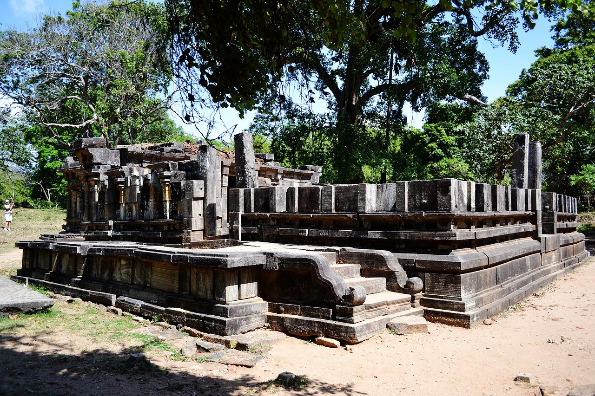

Discover Sri Lanka: A Journey through Culture, Nature, and Heritage
Geography and Climate
One of Sri Lanka's most notable characteristics is its geographical diversity. With an approximate area of 65,610 square kilometers (25,332 square miles), the island is marginally bigger than West Virginia. Despite its small size, Sri Lanka offers an amazing variety of landscapes, ranging from the immaculate beaches found along its 1,340 km (832 mi) coastline to the verdant tea plantations and foggy mountains found in its middle highlands.
The majority of the nation has a tropical climate, with distinct wet and dry seasons that are influenced by monsoon winds. Rainfall falls on the southwestern portion of the island during the southwest monsoon, which runs from May to September, and on the northern and eastern parts during the northeast monsoon, which runs from December to March. The best time to go varies depending on the area; generally speaking, December to March is the greatest time to visit the west and south coasts, while April to September is the best time to visit the east coast.
Cultural Heritage
Ancient Cities and Archaeological Sites
Several UNESCO World Heritage sites in Sri Lanka highlight the country's rich cultural legacy and ancient civilizations. These include:
Anuradhapura

Polonnaruwa
Anuradhapura: With a history stretching back to the fourth century BC, this city is among the oldest continually inhabited in the world. Renowned for its well-preserved remains, ancient stupas (dagobas), monasteries, and sacred bo trees, it served as the capital of the Kingdom of Anuradhapura.
Polonnaruwa: Renowned for its striking ruins and enormous stone sculptures, Polonnaruwa served as Sri Lanka's medieval capital from the eleventh to the thirteenth century AD. The Gal Vihara, a collection of four Buddha images carved into a granite rock face, is one of the attractions.
Sigiriya:Sigiriya Rock FortressOne of Sri Lanka's most recognizable sites, Sigiriya is recognized by UNESCO and is frequently referred to as the "Eighth Wonder of the World." Rising 200 meters (660 feet) above the plains below, the old rock castle is embellished with vibrant murals, well-manicured gardens, and the ruins of a royal residence.
Buddhist Temples and Sacred Sites
For more than two millennia, Buddhism has had a profound impact on Sri Lankan culture and civilization, and the island is home to thousands of Buddhist temples, monasteries, and other sacred locations:
Temple of the Tooth
Dambulla Cave Temple
Temple of the Sacred Tooth Relic (Sri Dalada Maligawa) in Kandy: One of Sri Lanka's holiest sites is the Temple of the Sacred Tooth Relic (Sri Dalada Maligawa) in Kandy, which is home to a Buddha tooth relic. The temple complex consists of exquisitely adorned pavilions, museums, and shrines.
Dambulla Cave Temple:The five cave temples that make up the Dambulla Cave Temple complex date to the first century BC. They are adorned with more than 150 Buddha sculptures and colorful murals that illustrate Buddhist mythology and the life of the Buddha.
Cultural Festivals
Over the year, Sri Lanka celebrates a wide range of festivals, each of which sheds light on the nation's varied religious and cultural customs:
Esala Perahera:Esala Perahera This magnificent procession celebrates the Buddha's Sacred Tooth Relic and is held in Kandy once a year. Traditional dancers, drummers, fire performers, and ornately decorated elephants parading through the streets are all aspects of the celebration.
Vesak: A national holiday honoring the Buddha's birth, enlightenment, and demise. Devotees perform acts of worship and charity in temples decorated with vibrant lights.
Natural Beauty
Beaches and Coastal Regions
Arugam Bay
The coastline of Sri Lanka is home to many immaculate beaches that provide chances for exploration, leisure, and water sports:
Arugam Bay: Known as a surfing hotspot on the east coast, attracting surfers from around the world, especially during the season from April to October.
Unawatuna: A charming crescent-shaped beach close to Galle, renowned for its teeming marine life, coral reefs, and crystal-clear turquoise waters. It's the perfect place to sunbathe, go diving, and snorkel.
Mirissa: A relaxed coastal town well-known for its serene shorelines and whale-watching adventures. In the waters off Mirissa, visitors can see dolphins, sperm whales, and blue whales from November to April.
Hill Country and Tea Plantations
Tea Plantations, Sri Lanka
The cooler climate and lush, rolling hills and tea gardens that characterize Sri Lanka's central highlands:
Nuwara Eliya: Known as "Little England" because of its temperate temperature and colonial architecture. Lake Gregory's tranquil waters, charming parks, and verdant tea plantations encircle the town.
Ella: A quaint community with breathtaking views of the Nine Arches Bridge and Ella Gap, tucked away among hills covered in tea. Visits to tea factories, exploring neighboring waterfalls, and trekking to Ella Rock are popular activities.
National Parks and Wildlife Sanctuaries
Sri Lanka is renowned for its biodiversity and is home to several national parks and wildlife reserves:
Yala National Park: One of the best sites in the world to see leopards in the wild and is the second largest national park in Sri Lanka. Elephants, sloth bears, crocodiles, and several bird species are among the other wildlife.
Wilpattu National Park: Well-known for its thick forest cover and organic lakes, or villus, which serve as home to a variety of bird species as well as leopards, elephants, and water buffalo. Wilpattu offers a more unique safari experience than Yala because it is less frequented.
Udawalawe National Park: The vast population of wild elephants in Sri Lanka is protected in Udawalawe National Park. Enjoying a jeep safari in vast grasslands and scrublands allows visitors to see animals, like water birds and elephants, in their native environments.
Cuisine
Sri Lankan cuisine is a vibrant reflection of its multicultural heritage, blending spices, flavors, and cooking techniques from various regions and communities:
Rice & Curry: The national food of Sri Lanka is rice and curry, which is eaten with a variety of curries, such as beef, chicken, fish, or vegetarian. Curry leaves, coconut milk, and flavorful spices are commonly used to enhance the spicy taste of curries.
Hoppers: Bowl-shaped pancakes with an egg (egg hopper) baked in the center that are made with fermented rice flour and coconut milk. Hoppers are frequently eaten with curry or sambols, which are spicy seasonings, for breakfast or as a snack.
String Hoppers: Steamed rice noodles rolled into thin strands and served with coconut sambol or curry. A favorite breakfast item, string hoppers go well with spicy sambols or dhal (lentil curry).
Practical Information
Visa and Entry Requirements
Tourist visas are usually required for entry into Sri Lanka and can be obtained online in advance of travel or at the airport. When making travel plans, it's best to visit the official Sri Lanka e-visa website or speak with the closest Sri Lankan embassy or consulate as visa laws and criteria may differ depending on nationality.
Getting Around
Sri Lanka offers various transportation options for travelers to explore the island's diverse attractions and regions:
Buses: Major cities, towns, and tourist sites in Sri Lanka are connected by a vast network of public buses. Buses might be packed, especially during rush hours, although they are reasonably priced.
Trains: The scenic tracks of Sri Lanka's railway system wind through hill terrain and down the coast, providing breathtaking views of coastal communities, tea plantations, and mountains. One of the most scenic train trips in the world is the Kandy to Ella route, which is especially well-known for its gorgeous scenery.
Taxis and Tuk-tuks: In cities and popular tourist destinations, taxis and three-wheeled autorickshaws, or tuk-tuks, are widely accessible. For quick trips within cities and towns, tuk-tuks are practical and reasonably priced modes of transportation.
Accommodation
Sri Lanka caters to a wide range of accommodation preferences and budgets, from luxury resorts and boutique hotels to guesthouses and homestays:
Hotels and Resorts: Found in large towns like Trincomalee, Bentota, and Mirissa; also found in popular tourist spots like Galle, Kandy, and Colombo. Budget-friendly lodging choices and upscale resorts with opulent amenities and picturesque vistas are both available in hotels.
Guesthouses and Homestays: Homestays and guesthouses are the best options for tourists looking for individualized attention and genuine cultural experiences. Frequently managed by families, guesthouses and homestays offer cozy lodging, freshly prepared meals, and an understanding of the customs and traditions of the area.
With its unrivaled natural beauty, diversity, and cultural richness, Sri Lanka offers visitors a wide range of unforgettable experiences. Visit Sri Lanka to experience its captivating landscapes, friendly people, and timeless customs. Whether you're interested in animal safaris, discovering ancient temples and archaeological wonders, unwinding on immaculate beaches, or enjoying delectable cuisine, make travel arrangements to Sri Lanka and explore the delights of this amazing island nation.